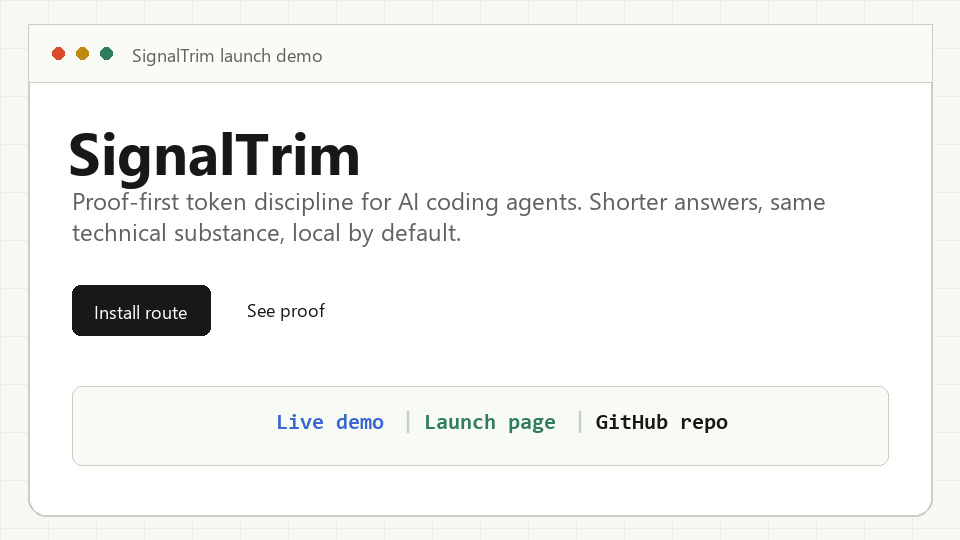
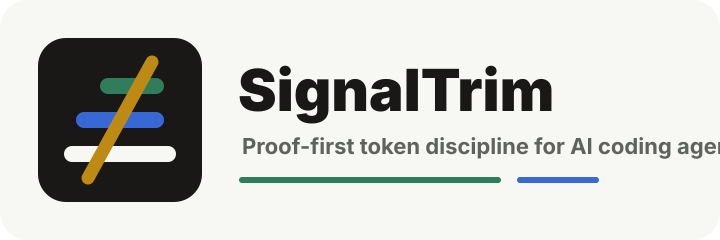

Install confidence
Windows piping, malformed settings, and plugin path drift are the sharpest trust killers. One failed install costs more than one missing mode.
Windows install guideOutput discipline for coding agents
Make AI coding agents answer shorter without losing the fix. It is a local skill, installer, hook system, compression tool, and proof loop for people who want signal instead of ceremony.
The open queue says what the market cares about: install must work, safety must be boring, numbers must be honest, and agent coverage must feel native instead of bolted on.
Windows piping, malformed settings, and plugin path drift are the sharpest trust killers. One failed install costs more than one missing mode.
Windows install guideCompression is powerful because it rewrites memory. That means backup location, validation, and atomic replace need to be explicit.
Compression safety notesThe most credible claim is not "always cheaper." It is "shorter output, faster reading, measurable tradeoffs." That is stronger.
Read honest numbersThe repo wins when Claude, Codex, Gemini, Cursor, opencode, and niche agents each get a path that respects their real install model.
Install matrixUse the mode preview and rough token model to understand what SignalTrim changes. This does not hide the overhead: output shrinks, input rules still cost context.
New object ref each render. Inline object prop = new ref = re-render. Wrap in `useMemo`.


Fast adoption comes from a funny hook. Long adoption comes from boring guarantees.
The core skill, hooks, statusline, and stats are local. No analytics, no account, no background telemetry.
`/signaltrim-compress` is opt-in and sends only the file you name to Claude/Anthropic. Sensitive filenames and private-key paths are refused.
Compression writes a temp candidate, validates structure, saves a backup, then atomically swaps only after the candidate passes.
Pick a target and copy the command. The full matrix lives in the GitHub README set; this page keeps the common paths fast.
Best path for Claude Code users: install the plugin, hooks, skills, and statusline support through the official plugin flow.
claude plugin marketplace add karurikwao/signaltrim && claude plugin install signaltrim@signaltrim